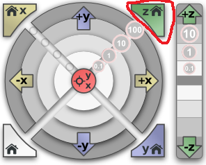

File selecting
Surface
Save to CSV
Save to PNG
Reset eye
Device
Serial ID: XX-XXX-XX
FW version: v1.2
Stable
Not connected
Home
Auto calibration
Z calibration
Start scan
Rescan zone
Scan progress
0%
Contour
Save to PNG
Reset eye
Clicked point: (-, -, -)
<
Along the Y axis (0)
>
Cuts
Save Y
Save as CSV
Save as PNG
Save X
Save as CSV
Save as PNG
<
Along the X axis (0)
>
Selecting rescan zone
getSnapshot
Auto calibration

Warning!
Prepare the surface!
Start calibration
Calibration...
Auto calibration has been successfully finished!
Return to start window...